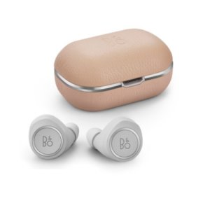

- Sennheiser Momentum True Wireless(My Current Earphone)
- Transparent Hearing
- Support Smart Control
- Support Bluetooth 5.0
- Touch Control
- Excellent radio audio.
Unique sound and performance,
a blend of state-of-the-art technology and sophisticated design

- Bang & Olufsen Beoplay E8 2.0
- Wireless charging support
- Transparent mode
- Support Bluetooth 4.2
- Touch Control
- Expertly Tuned Earphones
Code Free, Real Wireless
Use up to 16 hours
- QCY T5
- Reduced Delay Speed in Game Play
- A light weight of 4.3g
- Support Bluetooth 5.0
- Touch Control
- The best Cost-Effectiveness
- SONY WF-1000XM3
- Support Noise Canceling
- Unique high-resolution sound technology
- Support Bluetooth 5.0
- Touch Control
- Support Headphones Connect Application
- Airpods Pro
- Support Active Noise Canceling
- Detects if eartip is tight
- Support Bluetooth 5.0
- Touch Control
- Adaptive Equalizer